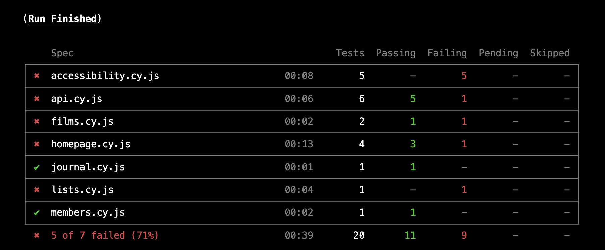
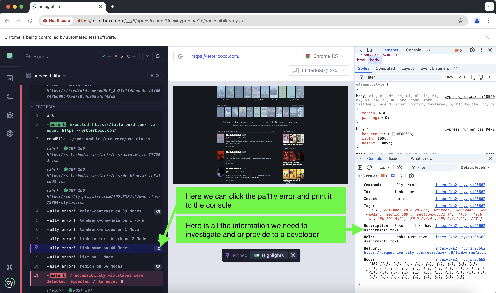
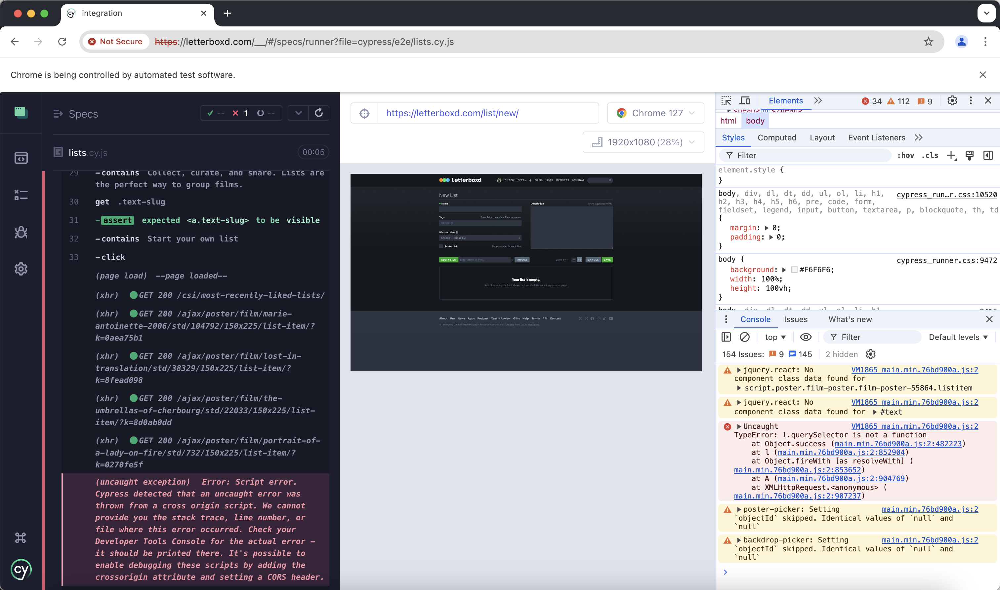
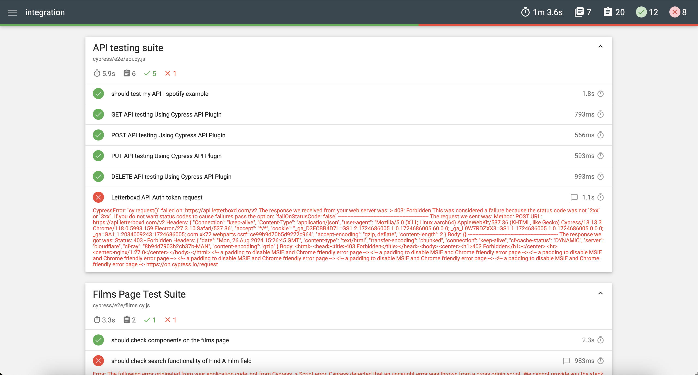
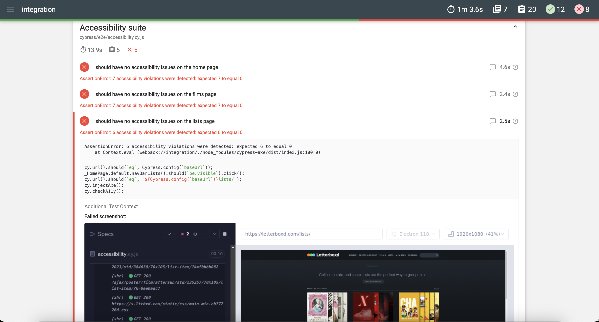
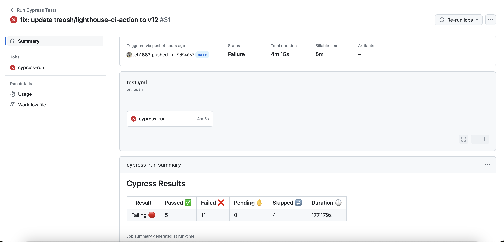
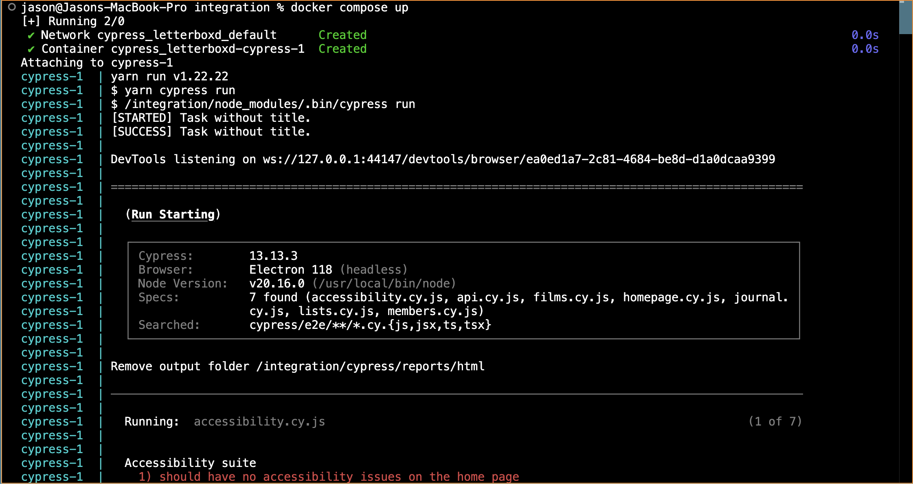
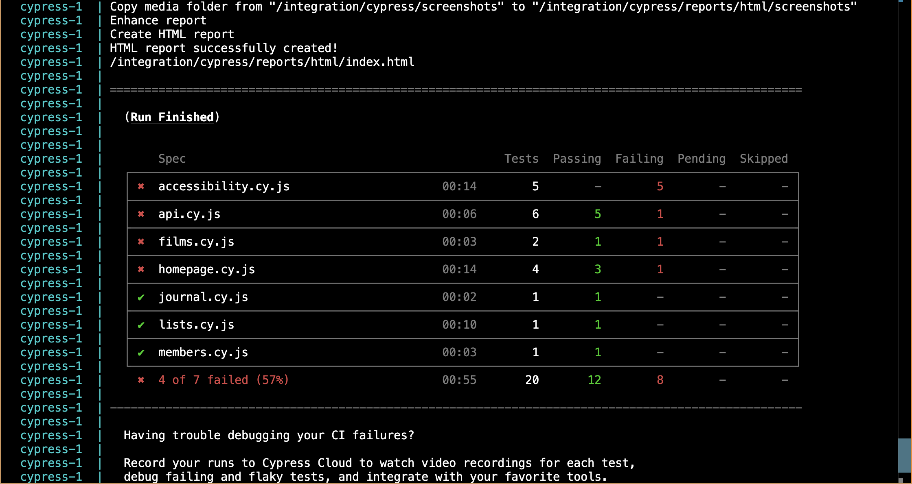

Case Study: Cypress Automation for Letterboxd
Project Overview
Client: Jason is a user and part of the film enthusiast community using Letterboxd for social networking and film discovery.
Objective: To create an automated testing suite using Cypress to ensure the stability, functionality, and user experience of key features on the Letterboxd website.
Background
Letterboxd is a popular social platform for film lovers, allowing users to keep a diary of films they've watched, create lists, write reviews, and interact with other members. With an increasing user base and continuous feature updates, ensuring a seamless user experience through rigorous testing became crucial.
Problem Statement
Manual testing of Letterboxd's features would become increasingly time-consuming and prone to human error. The client needed a robust automated testing solution to efficiently verify critical user flows, improve the accuracy of regression tests, and reduce the time spent on repetitive testing tasks.
Objectives and Goals
- Automate the testing of critical features on Letterboxd.
- Ensure that new features do not break existing functionality.
- Reduce the time and resources spent on manual testing.
- Create stable tests that run consistently across different environments.
Project Scope
The project focused on automating the following core features of the Letterboxd website:
- User Authentication: Testing user login, logout, and account creation functionalities.
- Movie Search and Navigation: Verifying the search functionality, movie details page, and navigation between different sections.
- User Interaction: Automating tests for adding movies to watchlists, rating movies, writing reviews, and following other users.
- List Management: Testing the creation, editing, and deletion of movie lists.
- Accessibility Testing
Tools and Technologies
- Cypress: The primary tool for end-to-end testing, chosen for its ease of use, fast execution, and powerful debugging capabilities.
- JavaScript/TypeScript: The programming languages used for writing Cypress test scripts.
- Github: For version control and collaboration.
Test Strategy
- Test Planning:
- Identify critical user flows to be automated.
- Define test cases, test data, and expected outcomes.
- Prioritise tests based on user impact and feature importance.
- Test Creation & Execution:
- Create tests from the Test Planning phase.
- Execute tests locally during development.
- Test Reporting:
- Generate detailed and beautified test reports.
- Track test coverage and identify areas for improvement.
- Regularly review and update test cases to adapt to new features and UI changes.
Challenges and Solutions
- Dynamic Content Handling:
- Challenge: Letterboxd’s content, such as movie recommendations and user-generated lists, changes frequently.
- Solution: Test against the test ID’s rather than titles or images.
- Authentication Flows:
- Challenge: Sensitive login data.
- Solution: Used Cypress’s fixtures feature to call the login details and gitignore to ignore this on the project.
Results
- Increased Test Coverage: Automated tests now cover 75% of the critical user flows, significantly reducing the risk of undetected bugs.

- Faster Feedback Loop: Test execution time was around 50 seconds on average, allowing in a real-world scenario developers to receive rapid feedback on code changes.
- Reduced Manual Testing Effort: Manual testing time would be cut, enabling QA teams to focus on exploratory testing and new feature validation.
- Improved Product Quality: Early detection of bugs in the CI/CD pipeline could prevent several critical issues from reaching production.
- Accessibility Issues Identified: Identified 6 accessibility issues on average per page on the site. This simple script could potentially identify and enable developers to make the site more accessible for its users.

- Cypress identified some in-application errors in the console: These could be reported to the developers in a real-world case to make the site more reliable overall.

- Mochaawesome report: The report provided a great visual and easy-to-read experience that could in a real-world example be shared across teams.


Conclusion
The implementation of Cypress for automated testing of Letterboxd’s website could be highly effective in improving test efficiency, accuracy, and overall product quality. The automated test suite provided a reliable safety net for continuous integration and deployment, which could help contribute to a more stable and user-friendly platform for film enthusiasts worldwide.
Future Work
- Expand Test Coverage: Include more edge cases and negative testing scenarios.
- Performance Testing: Integrate performance testing into the Cypress framework to monitor load times and responsiveness.
- Add Github Actions.
- Add Docker.
Updates
- Added GitHub action setup for this project.

- Added Docker setup.

